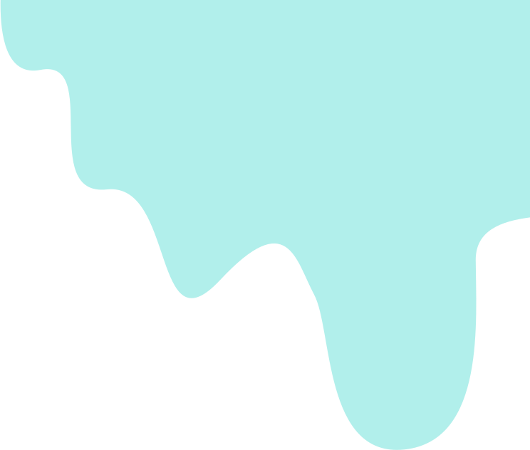
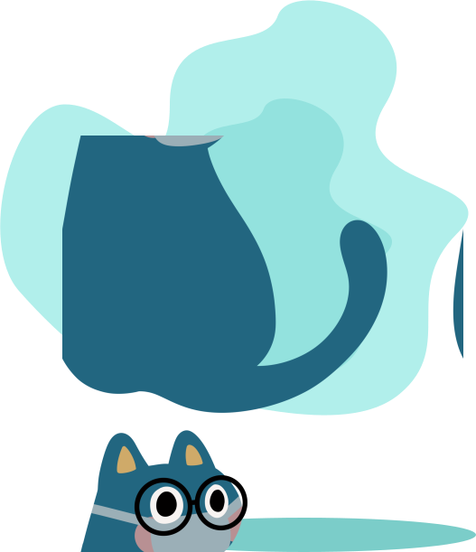

Hello Mr. Blob!
Project Titan/Flood is made specifically to help reach water in areas that require it by making optimised routes for water transport.
We aim to increasing a value for water and getting water to areas that do require it.
It focuses very heavily on the right to water, helping areas in poverty, prone to droughts.